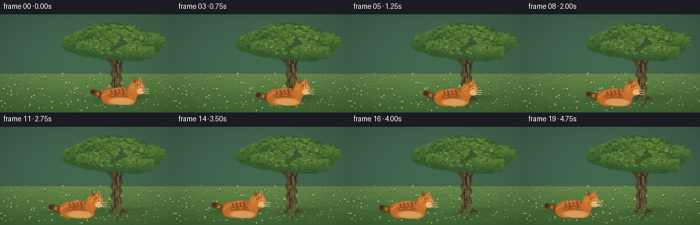
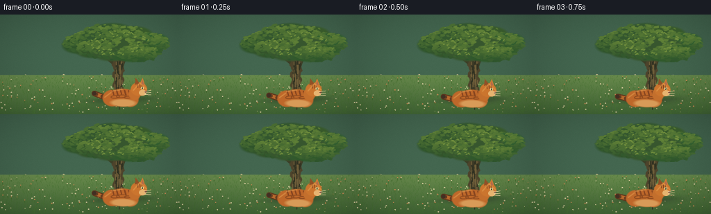
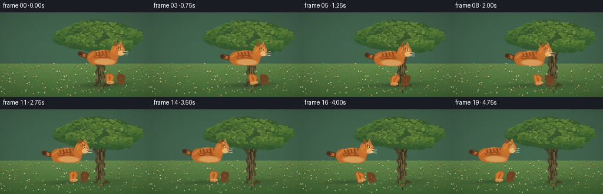
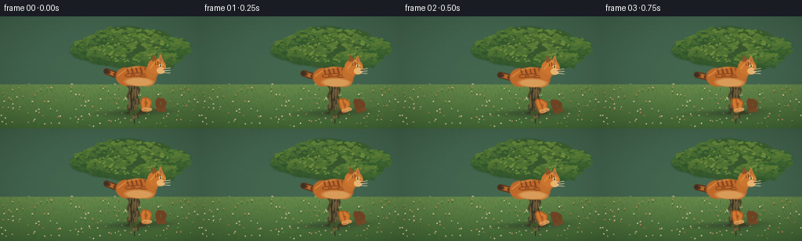
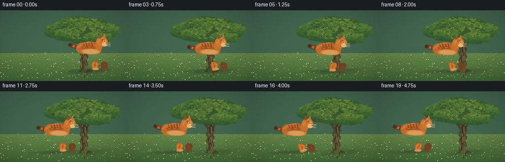
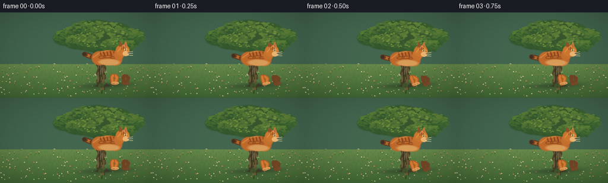

CODING AGENTS AS PIXEL WORLD MODELS
traex/DeepSeek-V4.1-Flash · instance_preservation_0054
点击播放 · 原生 RGB 像素
逐轮保存的候选
回放视频、检查图与代码变化。
每份候选均可单独播放。实际图片检查记录在下方工具轨迹中。
候选 01播放与检查图
点击播放 · 原生 RGB 像素


展开代码变化
--- 上一保存版本
+++ 本次保存版本
@@ -0,0 +1,427 @@
+from __future__ import annotations
+
+import math
+from pathlib import Path
+
+import cv2
+import numpy as np
+from PIL import Image, ImageDraw, ImageFilter
+
+import artifact_io
+
+
+CASE_DIR = Path(__file__).resolve().parent
+WIDTH, HEIGHT = 256, 144
+FRAMES, FPS = 20, 4.0
+SCALE = 4
+W, H = WIDTH * SCALE, HEIGHT * SCALE
+
+
+def lerp(a, b, t):
+ return a + (b - a) * t
+
+
+def mix(c0, c1, t):
+ return tuple(round(lerp(a, b, t)) for a, b in zip(c0, c1))
+
+
+def ellipse_mask(size, center, radii, angle=0.0, softness=1.5):
+ """Antialiased rotated ellipse, in supersampled pixels."""
+ w, h = size
+ cx, cy = center
+ rx, ry = radii
+ ys, xs = np.mgrid[0:h, 0:w]
+ ca, sa = math.cos(angle), math.sin(angle)
+ x = (xs - cx) * ca + (ys - cy) * sa
+ y = -(xs - cx) * sa + (ys - cy) * ca
+ d = np.sqrt((x / rx) ** 2 + (y / ry) ** 2)
+ return np.clip((1.0 - d) * min(rx, ry) / softness + 0.5, 0.0, 1.0)
+
+
+def polygon_mask(size, points, blur=0.0):
+ image = Image.new("L", size, 0)
+ ImageDraw.Draw(image).polygon(points, fill=255)
+ if blur:
+ image = image.filter(ImageFilter.GaussianBlur(blur))
+ return np.asarray(image, dtype=np.float32) / 255.0
+
+
+def paste_mask(canvas, color, mask, alpha=1.0):
+ a = (mask * alpha)[..., None]
+ canvas[:] = canvas * (1.0 - a) + np.asarray(color, dtype=np.float32) * a
+
+
+def add_grain(array, rng, amount=2.5):
+ noise = rng.normal(0, amount, array.shape[:2])[..., None]
+ return np.clip(array + noise, 0, 255)
+
+
+def background():
+ rng = np.random.default_rng(19)
+ y, x = np.mgrid[0:H, 0:W].astype(np.float32)
+ xn, yn = x / W, y / H
+
+ # Warm late-afternoon sky with a soft glow near the horizon.
+ top = np.array([72, 128, 166], np.float32)
+ middle = np.array([184, 194, 174], np.float32)
+ horizon = np.array([245, 207, 143], np.float32)
+ sky_t = np.clip(yn / 0.63, 0, 1)[..., None]
+ img = top * (1 - sky_t) + middle * sky_t
+ warm = np.clip((sky_t - 0.35) / 0.65, 0, 1) ** 1.8
+ img = img * (1 - warm * 0.8) + horizon * (warm * 0.8)
+ sun = np.exp(-(((xn - 0.79) / 0.18) ** 2 + ((yn - 0.25) / 0.24) ** 2) * 2.5)
+ img += sun[..., None] * np.array([34, 28, 11], np.float32)
+
+ # Soft cloud bands.
+ for cy, cx, sx, sy, strength in [
+ (0.20, 0.28, 0.17, 0.025, 0.33),
+ (0.31, 0.56, 0.24, 0.035, 0.21),
+ (0.14, 0.88, 0.15, 0.018, 0.20),
+ ]:
+ cloud = np.exp(-(((xn - cx) / sx) ** 2 + ((yn - cy) / sy) ** 2))
+ img = img * (1 - cloud[..., None] * strength) + np.array([245, 236, 211], np.float32) * cloud[..., None] * strength
+
+ # Distant tree line: several overlapping silhouettes with atmospheric haze.
+ horizon_y = 0.59
+ for layer, color, base, amp in [
+ (0, (95, 122, 101), 0.594, 0.065),
+ (1, (68, 103, 80), 0.605, 0.050),
+ ]:
+ ridge = base + amp * (0.52 + 0.22 * np.sin(xn * 28 + layer) + 0.13 * np.sin(xn * 61 + 1.7))
+ ridge += amp * 0.35 * np.sin(xn * 117 + layer * 0.7)
+ mask = np.clip((ridge - yn) * H / 3.0 + 0.5, 0, 1)
+ # Trunks break up the lower edge.
+ for tx in np.linspace(0.03 + 0.04 * layer, 0.97, 17 - layer * 3):
+ trunk = np.exp(-((xn - tx) / 0.0035) ** 2) * (yn > base - 0.005)
+ mask = np.maximum(mask, trunk * 0.9)
+ img = img * (1 - mask[..., None]) + np.array(color, np.float32) * mask[..., None]
+
+ # Meadow in perspective bands.
+ ground_y = 0.605
+ ground = np.clip((yn - ground_y) / (1 - ground_y), 0, 1)
+ far = np.array([104, 138, 76], np.float32)
+ near = np.array([53, 91, 47], np.float32)
+ gm = np.clip((yn - ground_y) * H / 3 + 0.5, 0, 1)[..., None]
+ ground_col = far * (1 - ground[..., None] * 0.75) + near * (ground[..., None] * 0.75)
+ img = img * (1 - gm) + ground_col * gm
+
+ # Sunlit grass strokes, dense near the bottom.
+ for _ in range(1500):
+ gx = rng.uniform(0, W)
+ gy = rng.uniform(0.615, 1.0) * H
+ depth = (gy / H - ground_y) / (1 - ground_y)
+ length = rng.uniform(2.0, 5.0) * SCALE * (0.5 + depth)
+ tilt = rng.uniform(-1.5, 1.5) * SCALE
+ val = rng.uniform(0.18, 0.38)
+ color = (int(57 + 46 * val), int(98 + 61 * val), int(41 + 27 * val))
+ cv2.line(img, (round(gx), round(gy)), (round(gx + tilt), round(gy - length)), color, 1, cv2.LINE_AA)
+
+ # Tiny wildflowers, with more detail in the foreground.
+ for _ in range(150):
+ fx = rng.uniform(4, W - 4)
+ fy = rng.uniform(0.62, 0.98) * H
+ if rng.random() < 0.60:
+ col = (226, 211, 166)
+ else:
+ col = (208, 141, 87)
+ r = rng.uniform(0.55, 1.1) * SCALE
+ cv2.circle(img, (round(fx), round(fy)), max(1, round(r)), col, -1, cv2.LINE_AA)
+ cv2.line(img, (round(fx), round(fy + r)), (round(fx), round(fy + r + 3 * SCALE)),
+ (67, 107, 46), max(1, SCALE // 2), cv2.LINE_AA)
+
+ # Gentle vignette and grain.
+ vignette = 1 - 0.22 * (((xn - 0.5) / 0.72) ** 2 + ((yn - 0.52) / 0.78) ** 2)
+ img *= np.clip(vignette, 0.68, 1)[..., None]
+ img = add_grain(img, rng, 2.2)
+ return img.astype(np.float32)
+
+
+def draw_tree(img):
+ rng = np.random.default_rng(71)
+ trunk_x = 0.665
+ # Contact shadow.
+ shadow = ellipse_mask((W, H), (trunk_x * W + 9 * SCALE, 0.864 * H),
+ (25 * SCALE, 4.2 * SCALE), -0.07, 10 * SCALE)
+ paste_mask(img, (47, 63, 42), shadow, 0.46)
+
+ # Branch silhouettes behind the canopy.
+ for pts, width in [
+ ([(0.675, 0.61), (0.64, 0.48), (0.58, 0.39), (0.51, 0.33)], 7),
+ ([(0.674, 0.56), (0.70, 0.43), (0.77, 0.34), (0.84, 0.29)], 6),
+ ([(0.671, 0.49), (0.68, 0.37), (0.72, 0.25)], 4),
+ ]:
+ pp = [(round(a * W), round(b * H)) for a, b in pts]
+ cv2.polylines(img, [np.array(pp)], False, (60, 62, 39), round(width * SCALE), cv2.LINE_AA)
+
+ # Broad trunk with irregular edges.
+ left = []
+ right = []
+ for yy in np.linspace(0.43, 0.87, 24):
+ bulge = 0.006 * math.sin((yy - 0.43) * 62) + 0.0025 * math.sin((yy - 0.43) * 151)
+ taper = (0.87 - yy) * 0.013
+ left.append(((trunk_x - 0.025 + bulge - taper) * W, yy * H))
+ right.append(((trunk_x + 0.026 + bulge + taper) * W, yy * H))
+ trunk_poly = left + right[::-1]
+ tm = polygon_mask((W, H), trunk_poly, 0.8)
+ paste_mask(img, (77, 67, 43), tm)
+
+ # Bark highlights and grooves follow the trunk contour.
+ for _ in range(78):
+ yy = rng.uniform(0.455, 0.855)
+ xx = trunk_x + rng.uniform(-0.021, 0.020) + (0.87 - yy) * 0.010
+ x0, y0 = xx * W, yy * H
+ length = rng.uniform(4, 15) * SCALE
+ dx = rng.uniform(-0.8, 0.8) * SCALE
+ bright = rng.random() < 0.58
+ color = (111, 94, 57) if bright else (48, 49, 33)
+ cv2.line(img, (round(x0), round(y0)), (round(x0 + dx), round(y0 + length)),
+ color, max(1, round(rng.uniform(0.5, 1.5) * SCALE)), cv2.LINE_AA)
+
+ # Moss and root flare.
+ root_poly = [
+ (0.622 * W, 0.865 * H), (0.648 * W, 0.834 * H),
+ (0.674 * W, 0.843 * H), (0.701 * W, 0.831 * H),
+ (0.733 * W, 0.866 * H), (0.687 * W, 0.879 * H),
+ (0.643 * W, 0.874 * H),
+ ]
+ paste_mask(img, (70, 62, 38), polygon_mask((W, H), root_poly, 1.3))
+ for _ in range(20):
+ mx = rng.uniform(0.648, 0.692) * W
+ my = rng.uniform(0.833, 0.866) * H
+ cv2.circle(img, (round(mx), round(my)), round(rng.uniform(0.7, 1.8) * SCALE),
+ (77, 103, 47), -1, cv2.LINE_AA)
+
+ # Canopy is built from many crisp leaf clusters, not one amorphous blob.
+ clusters = [
+ (0.49, 0.28, 0.14, 0.11), (0.60, 0.21, 0.15, 0.12),
+ (0.72, 0.24, 0.14, 0.12), (0.83, 0.29, 0.12, 0.10),
+ (0.55, 0.34, 0.12, 0.09), (0.68, 0.35, 0.16, 0.11),
+ (0.78, 0.39, 0.12, 0.08),
+ ]
+ for idx, (cx, cy, rx, ry) in enumerate(clusters):
+ m = ellipse_mask((W, H), (cx * W, cy * H), (rx * W, ry * H),
+ angle=-0.14, softness=2.5 * SCALE)
+ base = (47 + idx % 3 * 4, 83 + idx % 4 * 3, 42 + idx % 2 * 4)
+ paste_mask(img, base, m)
+ for _ in range(165):
+ angle = rng.uniform(0, math.tau)
+ radius = math.sqrt(rng.random())
+ lx = cx * W + math.cos(angle) * radius * rx * W
+ ly = cy * H + math.sin(angle) * radius * ry * H
+ # Flatten leaf clusters slightly, with warm top-light.
+ light = np.clip(1.18 - (ly - (cy - ry) * H) / (2 * ry * H), 0, 1)
+ green = mix((37, 76, 42), (100, 132, 55), light * rng.uniform(0.55, 1.0))
+ rr = rng.uniform(1.4, 3.4) * SCALE
+ cv2.ellipse(img, (round(lx), round(ly)), (round(rr * 1.35), round(rr * 0.55)),
+ rng.uniform(-35, 35), 0, 360, green, -1, cv2.LINE_AA)
+
+ # A few individual leaves catch the sun around the silhouette.
+ for _ in range(65):
+ angle = rng.uniform(0, math.tau)
+ lx = 0.67 * W + math.cos(angle) * rng.uniform(0.10, 0.18) * W
+ ly = 0.29 * H + math.sin(angle) * rng.uniform(0.06, 0.13) * H
+ cv2.ellipse(img, (round(lx), round(ly)), (round(1.8 * SCALE), round(0.75 * SCALE)),
+ rng.uniform(-50, 50), 0, 360, (113, 142, 61), -1, cv2.LINE_AA)
+
+
+def cat_geometry(phase, step):
+ """Return walking cat primitives in local, supersampled coordinates."""
+ bob = -1.0 * SCALE * (0.5 + 0.5 * math.cos(phase * 2))
+ swing = math.sin(phase)
+ counter = math.sin(phase + math.pi)
+ stride = step * SCALE
+ front = 12 * SCALE
+ rear = 27 * SCALE
+
+ def leg(hip, paw_swing, lift_side):
+ hipx, hipy = hip
+ paw_x = hipx + paw_swing * stride
+ paw_y = 43.5 * SCALE + bob
+ knee_x = (hipx + paw_x) * 0.5 + (3.0 * SCALE if lift_side else -1.5 * SCALE)
+ knee_y = 34.0 * SCALE + bob
+ if lift_side > 0:
+ paw_y -= max(0.0, paw_swing) * 2.2 * SCALE
+ return [(hipx, hipy), (knee_x, knee_y), (paw_x, paw_y)]
+
+ return {
+ "bob": bob,
+ "legs": [
+ leg((rear, 31.0 * SCALE + bob), -counter, 0),
+ leg((front, 31.0 * SCALE + bob), swing, 1),
+ leg((rear + 4 * SCALE, 31.0 * SCALE + bob), swing, 1),
+ leg((front - 4 * SCALE, 31.0 * SCALE + bob), -counter, 0),
+ ],
+ "tail_sway": math.sin(phase - 0.7) * 2.2 * SCALE,
+ }
+
+
+def draw_cat(img, cx, ground_y, phase, step=4.5):
+ """Draw a side-view orange tabby. Local origin is near its chest at y=0."""
+ g = cat_geometry(phase, step)
+ ox, oy = cx, ground_y + g["bob"]
+ angle = math.radians(1.5)
+
+ def xy(p):
+ x, y = p
+ xa = x * math.cos(angle) - y * math.sin(angle)
+ ya = x * math.sin(angle) + y * math.cos(angle)
+ return ox + xa, oy + ya
+
+ # Long ground shadow anchors the walk.
+ shadow = ellipse_mask((W, H), (ox - 7 * SCALE, ground_y + 2.0 * SCALE),
+ (34 * SCALE, 3.0 * SCALE), -0.04, 5 * SCALE)
+ paste_mask(img, (37, 53, 38), shadow, 0.42)
+
+ # Tail, drawn first so it disappears behind the rump.
+ tail = []
+ for i in range(19):
+ t = i / 18
+ tx = (-27 * t - 14 * t * t) * SCALE
+ ty = (7 - 4.5 * t - 6 * t * t) * SCALE + g["tail_sway"] * t * t
+ tail.append((tx, ty))
+ pts = np.array([xy(p) for p in tail], np.int32)
+ cv2.polylines(img, [pts], False, (93, 53, 28), 8 * SCALE, cv2.LINE_AA)
+ cv2.polylines(img, [pts], False, (183, 105, 44), 5 * SCALE, cv2.LINE_AA)
+ # Three dark rings near the tail tip.
+ for i in (11, 14, 17):
+ p = np.array([xy(tail[i])], np.int32)
+ cv2.circle(img, tuple(p[0]), round(2.6 * SCALE), (99, 59, 32), -1, cv2.LINE_AA)
+ tip = np.array([xy(tail[-1])], np.int32)
+ cv2.circle(img, tuple(tip[0]), round(3.1 * SCALE), (65, 47, 35), -1, cv2.LINE_AA)
+
+ # Far legs are slightly darker and behind the body.
+ for index, leg in enumerate(g["legs"]):
+ if index not in (0, 2):
+ continue
+ pts = np.array([xy(p) for p in leg], np.int32)
+ cv2.polylines(img, [pts], False, (110, 66, 35), 6 * SCALE, cv2.LINE_AA)
+ paw = np.array([xy(leg[-1])], np.int32)[0]
+ cv2.ellipse(img, (int(paw[0] + 2 * SCALE), int(paw[1])),
+ (round(4.0 * SCALE), round(2.2 * SCALE)), -3, 0, 360,
+ (115, 72, 39), -1, cv2.LINE_AA)
+
+ # Body silhouette.
+ body = ellipse_mask((W, H), xy((0, 0)), (23 * SCALE, 13 * SCALE), angle, 1.4 * SCALE)
+ chest = ellipse_mask((W, H), xy((11 * SCALE, 2 * SCALE)),
+ (12 * SCALE, 11 * SCALE), angle, 1.4 * SCALE)
+ rump = ellipse_mask((W, H), xy((-15 * SCALE, 1 * SCALE)),
+ (14 * SCALE, 12 * SCALE), angle, 1.4 * SCALE)
+ silhouette = np.maximum.reduce([body, chest, rump])
+ paste_mask(img, (190, 104, 42), silhouette)
+
+ # Belly is a lighter, soft cream.
+ belly = ellipse_mask((W, H), xy((1 * SCALE, 7.5 * SCALE)),
+ (18 * SCALE, 5.4 * SCALE), angle, 2.0 * SCALE)
+ paste_mask(img, (218, 159, 91), belly * silhouette, 0.94)
+
+ # Tabby stripes: dark arcs on the back and flanks.
+ for i, sx in enumerate(np.linspace(-15, 14, 6)):
+ width = 2.0 * SCALE if i % 2 else 1.4 * SCALE
+ p0 = xy((sx * SCALE, -10.5 * SCALE))
+ p1 = xy((sx * SCALE + 2.0 * SCALE, -4.0 * SCALE))
+ cv2.line(img, (round(p0[0]), round(p0[1])), (round(p1[0]), round(p1[1])),
+ (132, 67, 31), round(width), cv2.LINE_AA)
+ for sx, sy, rx, ry in [(-11, -1, 6, 2), (-2, -2, 7, 2), (7, -1, 5, 1.6)]:
+ cv2.ellipse(img, tuple(map(round, xy((sx * SCALE, sy * SCALE)))),
+ (round(rx * SCALE), round(ry * SCALE)), -4, 0, 360,
+ (143, 75, 31), max(1, SCALE), cv2.LINE_AA)
+
+ # Near legs.
+ for index, leg in enumerate(g["legs"]):
+ if index not in (1, 3):
+ continue
+ pts = np.array([xy(p) for p in leg], np.int32)
+ cv2.polylines(img, [pts], False, (177, 91, 35), round(6.4 * SCALE), cv2.LINE_AA)
+ cv2.polylines(img, [pts], False, (207, 122, 51), round(3.5 * SCALE), cv2.LINE_AA)
+ paw = np.array([xy(leg[-1])], np.int32)[0]
+ cv2.ellipse(img, (int(paw[0] + 2.2 * SCALE), int(paw[1])),
+ (round(4.4 * SCALE), round(2.3 * SCALE)), -3, 0, 360,
+ (219, 154, 85), -1, cv2.LINE_AA)
+ cv2.line(img, (int(paw[0] - 0.5 * SCALE), int(paw[1] + 0.8 * SCALE)),
+ (int(paw[0] + 3.5 * SCALE), int(paw[1] + 0.6 * SCALE)),
+ (150, 92, 52), max(1, SCALE // 2), cv2.LINE_AA)
+
+ # Neck and head.
+ neck = ellipse_mask((W, H), xy((17 * SCALE, -6 * SCALE)),
+ (8.5 * SCALE, 9 * SCALE), angle, 1.2 * SCALE)
+ paste_mask(img, (195, 111, 45), neck)
+ head = ellipse_mask((W, H), xy((23 * SCALE, -13 * SCALE)),
+ (11.8 * SCALE, 10.0 * SCALE), angle, 1.0 * SCALE)
+ paste_mask(img, (203, 117, 46), head)
+
+ # Ears, one back ear dark and one front ear sunlit.
+ back_ear = [xy((17 * SCALE, -19 * SCALE)), xy((18 * SCALE, -29 * SCALE)), xy((24 * SCALE, -21 * SCALE))]
+ front_ear = [xy((24 * SCALE, -20 * SCALE)), xy((28 * SCALE, -29 * SCALE)), xy((32 * SCALE, -18 * SCALE))]
+ paste_mask(img, (145, 80, 38), polygon_mask((W, H), back_ear, 0.45))
+ paste_mask(img, (210, 124, 50), polygon_mask((W, H), front_ear, 0.45))
+ inner = [xy((26.5 * SCALE, -20.5 * SCALE)), xy((28 * SCALE, -26 * SCALE)), xy((30 * SCALE, -19.5 * SCALE))]
+ paste_mask(img, (176, 105, 77), polygon_mask((W, H), inner, 0.45))
+
+ # Face: forehead stripes, eyes, muzzle, nose, and whiskers.
+ for dx in (-2.0, 1.2, 4.2):
+ p0 = xy(((23 + dx) * SCALE, -19.5 * SCALE))
+ p1 = xy(((23.5 + dx) * SCALE, -15.0 * SCALE))
+ cv2.line(img, tuple(map(round, p0)), tuple(map(round, p1)),
+ (130, 69, 34), max(1, SCALE), cv2.LINE_AA)
+ eye = tuple(map(round, xy((27.8 * SCALE, -14.4 * SCALE))))
+ cv2.ellipse(img, eye, (round(2.3 * SCALE), round(1.9 * SCALE)), 0, 0, 360,
+ (235, 208, 135), -1, cv2.LINE_AA)
+ cv2.ellipse(img, eye, (round(0.85 * SCALE), round(1.65 * SCALE)), 0, 0, 360,
+ (45, 53, 34), -1, cv2.LINE_AA)
+ cv2.circle(img, (eye[0] - round(0.5 * SCALE), eye[1] - round(0.55 * SCALE)),
+ max(1, round(0.55 * SCALE)), (242, 233, 191), -1, cv2.LINE_AA)
+ muzzle = tuple(map(round, xy((28.5 * SCALE, -8.0 * SCALE))))
+ cv2.ellipse(img, muzzle, (round(5.2 * SCALE), round(4.2 * SCALE)), 0, 0, 360,
+ (231, 180, 112), -1, cv2.LINE_AA)
+ nose = tuple(map(round, xy((33.0 * SCALE, -9.4 * SCALE))))
+ cv2.ellipse(img, nose, (round(1.55 * SCALE), round(1.1 * SCALE)), -7, 0, 360,
+ (118, 66, 55), -1, cv2.LINE_AA)
+ for k in range(3):
+ y0 = (-10 + 2.3 * k) * SCALE
+ p0 = xy((31.5 * SCALE, y0))
+ p1 = xy((40.5 * SCALE, y0 - (1.8 - k) * SCALE))
+ cv2.line(img, tuple(map(round, p0)), tuple(map(round, p1)),
+ (239, 213, 164), max(1, round(0.38 * SCALE)), cv2.LINE_AA)
+
+ # Warm rim light along the head, back, and upper tail.
+ rim = np.zeros((H, W), np.float32)
+ for a, b in [
+ ((15, -11), (24, -22)), ((24, -22), (34, -13)),
+ ((-1, -12), (-16, -9)), ((-17, -7), (-26, 0)),
+ ]:
+ p0, p1 = xy((a[0] * SCALE, a[1] * SCALE)), xy((b[0] * SCALE, b[1] * SCALE))
+ cv2.line(rim, tuple(map(round, p0)), tuple(map(round, p1)), 1.0,
+ round(1.2 * SCALE), cv2.LINE_AA)
+ paste_mask(img, (248, 193, 107), rim, 0.33)
+
+ return img
+
+
+def render():
+ base = background()
+ draw_tree(base)
+ # Static scene is rendered once; the cat and its shadow are layered per frame.
+ frames = []
+ for i in range(FRAMES):
+ # Move 1.05 trunk widths over the clip. End with a clean gap to the tree.
+ start_x = 0.690 * W
+ end_x = 0.285 * W
+ u = i / (FRAMES - 1)
+ eased = 0.5 - 0.5 * math.cos(math.pi * u)
+ cx = lerp(start_x, end_x, 0.78 * u + 0.22 * eased)
+ ground_y = 0.840 * H + 1.2 * SCALE * math.sin(math.pi * u)
+ phase = math.tau * (2.65 * u)
+ frame = base.copy()
+ draw_cat(frame, cx, ground_y, phase, step=4.8)
+
+ # Soft final grade and high-quality downsample.
+ frame = np.clip(frame, 0, 255).astype(np.uint8)
+ frame = cv2.resize(frame, (WIDTH, HEIGHT), interpolation=cv2.INTER_AREA)
+ frames.append(frame)
+ return np.stack(frames)
+
+
+if __name__ == "__main__":
+ video = render()
+ artifact_io.save(video, CASE_DIR)
+ print(f"saved {video.shape} frames to {CASE_DIR}")
候选 02播放与检查图
点击播放 · 原生 RGB 像素


展开代码变化
--- 上一保存版本
+++ 本次保存版本
@@ -258,7 +258,8 @@
def draw_cat(img, cx, ground_y, phase, step=4.5):
"""Draw a side-view orange tabby. Local origin is near its chest at y=0."""
g = cat_geometry(phase, step)
- ox, oy = cx, ground_y + g["bob"]
+ # Local coordinates place the chest near y=0 and the paws near y=43.5.
+ ox, oy = cx, ground_y - 43.5 * SCALE + g["bob"]
angle = math.radians(1.5)
def xy(p):
候选 03播放与检查图
点击播放 · 原生 RGB 像素


展开代码变化
--- 上一保存版本
+++ 本次保存版本
@@ -405,7 +405,7 @@
frames = []
for i in range(FRAMES):
# Move 1.05 trunk widths over the clip. End with a clean gap to the tree.
- start_x = 0.690 * W
+ start_x = 0.715 * W
end_x = 0.285 * W
u = i / (FRAMES - 1)
eased = 0.5 - 0.5 * math.cos(math.pi * u)
可观测工具轨迹
实际执行的命令与返回图片。
命令 1exit 0
/bin/bash -c "sed -n '1,240p' prompt.txt"
命令 2exit 0
/bin/bash -c "sed -n '1,280p' GENERATION_RULES.md"
命令 3exit 0
/bin/bash -c 'cat task_spec.json'
命令 4exit 0
/bin/bash -c "find . -maxdepth 2 -type f -printf '%p\\n' | sort"
命令 5exit 0
/bin/bash -c "sed -n '1,320p' artifact_io.py"
命令 6exit 0
/bin/bash -c "python - <<'PY'
from PIL import Image, ImageDraw
print('Pillow', Image.__version__)
try:
import numpy as np
print('numpy', np.__version__)
except Exception as e: print(e)
PY"命令 7exit 0
/bin/bash -c 'command -v ffmpeg || true'
命令 8exit 0
/bin/bash -c 'fc-list | head -n 8 || true'
命令 9exit 0
/bin/bash -c "python - <<'PY' mods=['cv2','imageio','imageio_ffmpeg','av'] for m in mods: try: x=__import__(m); print(m,'yes',getattr(x,'__version__','')) except Exception as e: print(m,'no') PY"
命令 10exit 1
/bin/bash -c 'python generate.py'
命令 11exit 1
/bin/bash -c 'python generate.py'
命令 12exit 0
/bin/bash -c "rg -n \"cv2\\.(circle|ellipse|line|polylines)\" generate.py"
命令 13exit 0
/bin/bash -c 'python generate.py'
命令 14exit 0
/bin/bash -c 'command -v chafa || command -v viu || command -v jp2 || true'
命令 15exit 0
/bin/bash -c 'python generate.py'
命令 16exit 0
/bin/bash -c 'command -v img2txt || command -v jp2 || command -v viu || command -v timg || true'
命令 17exit 0
/bin/bash -c 'ls -lh inspection.png transition_check.png frames/00.png frames/19.png pixels.npz index.html'
命令 18exit 0
/bin/bash -c "python - <<'PY' from PIL import Image import numpy as np for f in ['frames/00.png','frames/10.png','frames/19.png']: a=np.asarray(Image.open(f)).astype(float) print(f, 'mean', a.mean((0,1)).round(1), 'std', a.std((0,1)).round(1), 'range', a.min(),a.max()) PY"
命令 19exit 0
/bin/bash -c "python - <<'PY'
from PIL import Image
im=Image.open('inspection.png')
# ANSI truecolor half-block preview, preserving enough detail to audit layout.
im.thumbnail((96,54))
p=im.load(); w,h=im.size
for y in range(0,h-1,2):
line=[]
for x in range(w):
r,g,b=p[x,y]; r2,g2,b2=p[x,y+1]
line.append(f'\\x1b[38;2;{r};{g};{b}m\\x1b[48;2;{r2};{g2};{b2}mâ')
print(''.join(line)+'\\x1b[0m')
PY"命令 20exit 0
/bin/bash -c "python - <<'PY'
from PIL import Image
import numpy as np
for f in [0,5,10,15,19]:
a=np.asarray(Image.open(f'frames/{f:02d}.png'))
# compact map: orange O, cream C, dark D, green g, trunk t, sky .
out=[]
for y in range(68,140,2):
row=''
for x in range(84,226,2):
r,g,b=a[y:y+2,x:x+2].mean((0,1))
if r>150 and r>g*1.25 and g>b*1.1: c='O'
elif r>185 and g>125 and b<115: c='C'
elif r>120 and g>65 and g<125 and b<80: c='o'
elif r<70 and g<65: c='D'
elif g>r*1.15 and g>b*1.1: c='g'
elif r>g*1.12 and g>b*1.2: c='t'
else: c='.'
row+=c
out.append(row)
print('\\nFRAME',f)
print('\\n'.join(out))
PY"命令 21exit 0
/bin/bash -c 'python generate.py'
命令 22exit 0
/bin/bash -c "python - <<'PY'
from pathlib import Path
import numpy as np
from PIL import Image
import json
spec=json.loads(Path('task_spec.json').read_text())
files=sorted(Path('frames').glob('*.png'))
arr=np.stack([np.asarray(Image.open(p)) for p in files])
print('files',len(files),'shape',arr.shape,'dtype',arr.dtype)
print('spec',spec['width'],spec['height'],spec['frames'],spec['fps'])
print('all frame sizes', sorted(set(Image.open(p).size for p in files)))
print('frame diffs mean', np.round(np.abs(arr[1:].astype(float)-arr[:-1]).mean((1,2,3)),3))
print('unique colors first/last', len(np.unique(arr[0].reshape(-1,3),axis=0)),len(np.unique(arr[-1].reshape(-1,3),axis=0)))
z=np.load('pixels.npz')['pixels']; print('pixels',z.shape,z.dtype,'packed range',z.min(),z.max())
PY"命令 23exit 0
/bin/bash -c "python - <<'PY'
from pathlib import Path
import numpy as np
from PIL import Image
for p in [Path('frames/00.png'),Path('frames/10.png'),Path('frames/19.png')]:
a=np.asarray(Image.open(p)).astype(np.int16)
# Orange mask, then report its extent. This also catches accidental clipping.
m=(a[:,:,0]>130)&(a[:,:,0]>a[:,:,1]*1.25)&(a[:,:,1]>a[:,:,2]*1.15)
ys,xs=np.where(m)
print(p.name,'orange bbox', (xs.min(),ys.min(),xs.max(),ys.max()),'pixels',len(xs))
PY"命令 24exit 0
/bin/bash -c "python - <<'PY'
from pathlib import Path
from PIL import Image
import numpy as np
# Inspect only the lower scene, where the cat lives, using a stronger orange threshold.
for p in [Path('frames/00.png'),Path('frames/10.png'),Path('frames/19.png')]:
a=np.asarray(Image.open(p)).astype(np.int16)
yy,xx=np.mgrid[:a.shape[0],:a.shape[1]]
m=(a[:,:,0]>155)&(a[:,:,0]>a[:,:,1]*1.3)&(a[:,:,1]>a[:,:,2]*1.2)&(yy>85)
ys,xs=np.where(m)
print(p.name, (xs.min(),ys.min(),xs.max(),ys.max()), 'pixels',len(xs), 'centroid',(round(xs.mean(),1),round(ys.mean(),1)))
PY"命令 25exit 0
/bin/bash -c "python - <<'PY'
from pathlib import Path
from PIL import Image
import numpy as np
for p in [Path('frames/00.png'),Path('frames/19.png')]:
a=np.asarray(Image.open(p)).astype(np.int16)
print('\\n',p.name)
# print 8x8 mean colors in the cat/trunk band as compact hex color grid
for y in range(84,140,8):
row=[]
for x in range(8,248,8):
c=a[y:y+8,x:x+8].mean((0,1)).astype(int)
row.append('%02x%02x%02x'%tuple(c))
print(y,' '.join(row))
PY"命令 26exit 0
/bin/bash -c "python - <<'PY'
from pathlib import Path
import numpy as np
from PIL import Image
# Compare cat-only dynamic pixels with static scene; report moving-pixel envelope.
frames=np.stack([np.asarray(Image.open(p)).astype(np.int16) for p in sorted(Path('frames').glob('*.png'))])
med=np.median(frames,axis=0)
for i in (0,5,10,15,19):
d=np.abs(frames[i]-med).max(2)
ys,xs=np.where(d>12)
print(i,'moving envelope', (xs.min(),ys.min(),xs.max(),ys.max()),'pixels',len(xs))
PY"命令 27exit 0
/bin/bash -c "python - <<'PY'
from PIL import Image
import numpy as np
for f in (0,19):
a=np.asarray(Image.open(f'frames/{f:02d}.png')).astype(int)
print('FRAME',f)
# 4px blocks, x 120..230, y 92..136; use orange-likelihood classes.
for y in range(92,137,4):
s=''
for x in range(120,233,4):
p=a[y:y+4,x:x+4].mean((0,1))
r,g,b=p
if r>130 and r>g*1.22 and g>b*1.08: c='O'
elif r>155 and g>100 and b<110: c='C'
elif r>100 and r>g*1.18 and g>b*1.1: c='o'
elif r<80 and g<75: c='D'
elif g>r*1.12 and g>b*1.08: c='g'
elif r>g*1.10 and g>b*1.15: c='t'
else: c='.'
s+=c
print(f'{y:03d} {s}')
PY"命令 28exit 0
/bin/bash -c "python - <<'PY'
from PIL import Image
im=Image.open('frames/00.png')
print(im.size)
# bounding box of the distinctive orange cat color, manually derived from saturation
import numpy as np
a=np.asarray(im).astype(float)
r,g,b=a[:,:,0],a[:,:,1],a[:,:,2]
m=(r>150)&(r-g>45)&(g-b>18)
y,x=np.where(m)
print(x.min(),x.max(),y.min(),y.max(),len(x))
PY"命令 29exit 0
/bin/bash -c "python - <<'PY'
from pathlib import Path
import numpy as np
from PIL import Image
for p in [Path('frames/00.png'),Path('frames/19.png')]:
a=np.asarray(Image.open(p)).astype(float)
r,g,b=a[:,:,0],a[:,:,1],a[:,:,2]
# cat orange only; exclude small flower speckles via connected components
import cv2
m=((r>145)&(r-g>42)&(g-b>15)).astype(np.uint8)
n,lab,stats,cents=cv2.connectedComponentsWithStats(m,8)
keep=np.zeros_like(m)
for j in range(1,n):
if stats[j,cv2.CC_STAT_AREA]>=20: keep[lab==j]=1
y,x=np.where(keep)
print(p.name, 'bbox', (x.min(),y.min(),x.max(),y.max()),'area',len(x))
PY"命令 30exit 0
/bin/bash -c "python - <<'PY'
import generate
import numpy as np
from PIL import Image
base=generate.background(); generate.draw_tree(base)
for idx in (0,9,19):
f=np.asarray(Image.open(f'frames/{idx:02d}.png')).astype(np.int16)
b=generate.cv2.resize(np.clip(base,0,255).astype(np.uint8),(256,144),interpolation=generate.cv2.INTER_AREA).astype(np.int16)
d=np.abs(f-b).max(2)
ys,xs=np.where(d>8)
print('\\nFRAME',idx,'difference bbox', (xs.min(),ys.min(),xs.max(),ys.max()), 'area',len(xs))
# Render the cat bbox with coarse semantic color labels.
x0,x1=xs.min(),xs.max(); y0,y1=ys.min(),ys.max()
for y in range(y0,y1+1,2):
row=''
for x in range(x0,x1+1,2):
p=f[y:y+2,x:x+2].mean((0,1)); r,g,bl=p
if d[y:y+2,x:x+2].max()<=8: c='.'
elif r>195 and g>115 and bl<110: c='C'
elif r>130 and r-g>35 and g-bl>8: c='O'
elif r>95 and r-g>20: c='o'
elif r<100 and g<100: c='D'
else: c='?'
row+=c
print(row)
PY"命令 31exit 0
/bin/bash -c "python - <<'PY'
from PIL import Image
import numpy as np, cv2
for idx in (0,10,19):
a=np.asarray(Image.open(f'frames/{idx:02d}.png')).astype(np.int16)
r,g,b=a[:,:,0],a[:,:,1],a[:,:,2]
# Broad orange family, then components.
m=((r>100)&(r-g>25)&(g-b>7)).astype(np.uint8)
n,lab,stats,cents=cv2.connectedComponentsWithStats(m,8)
comps=[]
for j in range(1,n):
x,y,w,h,area=stats[j]
if area>8: comps.append((area,x,y,w,h))
comps=sorted(comps,reverse=True)
print(idx, comps[:15])
PY"保存候选 3 份；完成命令 31 次；可验证图片返回 0 张。原始 API 响应与完整日志保留在本地。